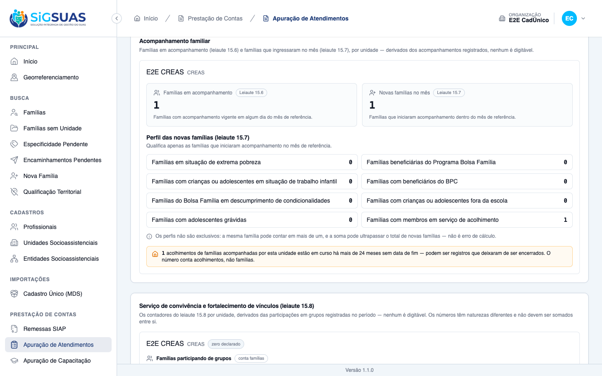
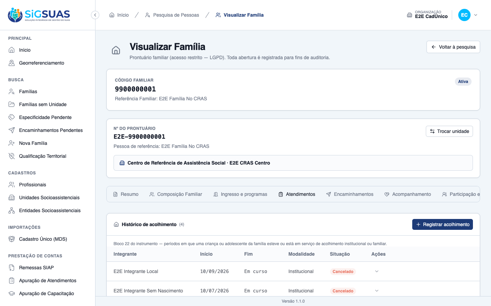
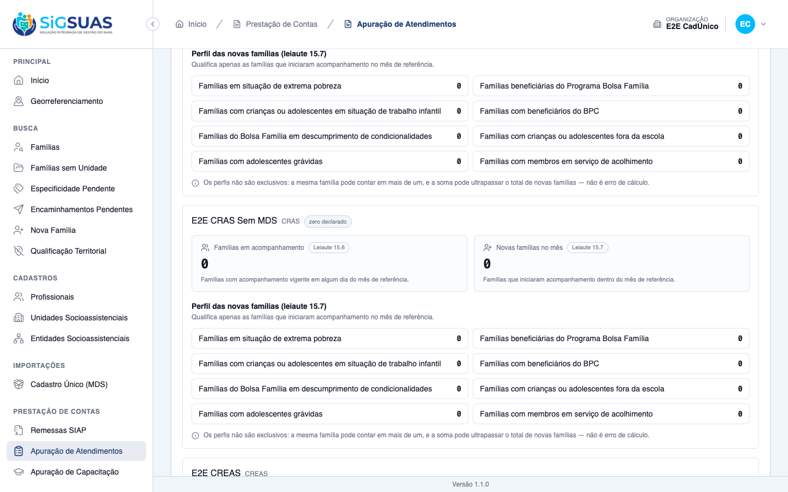
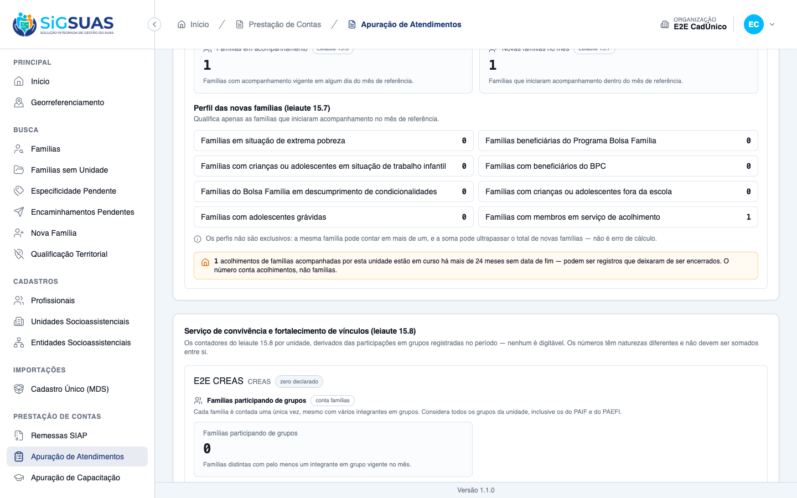

Relatório de Critérios de Aceite — HU #10898
Resumo
Os 13 critérios de aceite da HU #10898 foram verificados: 8 na tela, combinados com a suíte automatizada, e 5 só pela suíte (CA05, CA06 e CA08, que exigem massas específicas de datas e modalidade; CA12, que exige um Operacional com a permissão da apuração lotado só no CREAS; e CA13, que exige um segundo município). Nenhum critério ficou em falta e nenhum defeito funcional foi encontrado. Com esta HU, nenhum campo da apuração aparece como indisponível. A suíte teve 23 testes aprovados.
| CA | Critério | Status |
|---|---|---|
| CA01 | Perfil aceso (happy path) | ATENDIDO · navegador + automatizado |
| CA02 | Leiaute 15.7 sem indisponíveis | ATENDIDO · navegador + automatizado |
| CA03 | Nenhum leiaute com campo indisponível | ATENDIDO · navegador + automatizado |
| CA04 | Acolhimento encerrado antes do período não conta | ATENDIDO · navegador + automatizado |
| CA05 | Acolhimento encerrado durante o mês conta | ATENDIDO · automatizado |
| CA06 | Família com dois acolhidos conta uma vez | ATENDIDO · automatizado |
| CA07 | Acolhido maior de idade não conta | ATENDIDO · navegador + automatizado |
| CA08 | Institucional e familiar contam juntos | ATENDIDO · automatizado |
| CA09 | Acolhimento cancelado não conta | ATENDIDO · navegador + automatizado |
| CA10 | Acolhimento longo é sinalizado | ATENDIDO · navegador + automatizado |
| CA11 | Sem dado de cidadão na tela | ATENDIDO · navegador + automatizado |
| CA12 | Operacional vê apenas as suas unidades | ATENDIDO · automatizado |
| CA13 | Isolamento entre municípios | ATENDIDO · automatizado |
CA01 — Perfil aceso (happy path) ATENDIDO · navegador + automatizado
Critério (Gherkin): Dado que em agosto de 2026 o "CREAS" teve 7 novas famílias em acompanhamento, das quais 2 com criança em acolhimento vigente Quando eu consultar a apuração do "CREAS" para agosto de 2026 Então o perfil de acolhimento apresenta 2 E deixa de aparecer como indisponível.
Como foi testado: Login como Master (CLIENT_ADMIN) da organização E2E CadÚnico. A família E2E Família No CRAS recebeu, pela tela, acompanhamento PAEFI no E2E CREAS com ingresso em 01/09/2026 (o que a torna família nova de 09/2026 no CREAS). Ela já tinha o acolhimento em curso de E2E Integrante Local (16 anos) desde 10/09/2026, e recebeu um acolhimento de E2E Integrante Sem Nascimento iniciado em 01/03/2024, sem fim. Apuração de Atendimentos → 2026 · 09 — Setembro · E2E CREAS.
- No bloco “Perfil das novas famílias (leiaute 15.7)” do E2E CREAS, “Famílias com membros em serviço de acolhimento” apresenta <b>1</b> — a única nova família do mês, com criança em acolhimento vigente.
- O campo aparece com número, sem selo de indisponível.
- Pest: “acende o perfil de acolhimento sobre as novas familias do mes” (7 novas famílias, 2 com acolhimento → 2).


CA02 — Leiaute 15.7 sem indisponíveis ATENDIDO · navegador + automatizado
Critério (Gherkin): Dado que estou consultando a apuração Quando eu olhar o leiaute 15.7 Então todos os seus nove campos apresentam número E não existe mais painel de indisponíveis para esse leiaute.
Como foi testado: Mesma tela do CA01.
- Os nove campos do 15.7 (novas famílias e os oito perfis) aparecem com número.
- Não há painel nem selo de indisponível no leiaute.
- Pest: “conta OITO perfis acesos e NENHUM apagado depois da F7” e “nenhum case aponta fase de dependencia depois da F7”.
CA03 — Nenhum leiaute com campo indisponível ATENDIDO · navegador + automatizado
Critério (Gherkin): Dado que estou consultando a apuração de qualquer unidade e período Quando eu percorrer os seis leiautes de execução Então nenhum deles apresenta campo declarado como indisponível.
Como foi testado: Varredura do texto da página inteira da apuração (todos os leiautes) por “indisponível”, “ainda não apurado”, “sem fonte” e “depende da fase”.
- Nenhuma ocorrência na página.
- Pest: “nao declara NENHUM campo indisponivel em leiaute nenhum, em unidade nenhuma” — percorre todos os perfis e contadores e confirma a lista de indisponíveis vazia.
Evidência por cobertura automatizada — ver Anexo.
CA04 — Acolhimento encerrado antes do período não conta ATENDIDO · navegador + automatizado
Critério (Gherkin): Dado que uma família nova teve uma criança acolhida entre 03/2022 e 11/2023 Quando eu consultar a apuração de agosto de 2026 Então ela não é contada no perfil de acolhimento E o registro continua visível no prontuário como histórico.
Como foi testado: A família do CA01 tem também o acolhimento de 01/03/2022 a 30/11/2023, encerrado antes de setembro/2026.
- Ele não entra no perfil: o 1 do CA01 vem só do acolhimento em curso, e cai para 0 quando esse é cancelado (CA09) — o histórico de 2022–2023 não sustenta o perfil.
- O registro continua visível no prontuário como “Encerrado”.
- Pest: “nao conta acolhimento encerrado antes do mes, e o registro continua no prontuario”.


CA05 — Acolhimento encerrado durante o mês conta ATENDIDO · automatizado
Critério (Gherkin): Dado que uma criança teve o acolhimento encerrado em 05/08/2026 Quando eu consultar a apuração de agosto de 2026 Então a família é contada no perfil.
Como foi testado: Coberto pela suíte automatizada.
- Pest: “conta acolhimento encerrado DENTRO do mes e respeita as bordas do periodo” — fim no mês conta; fim no último dia do mês anterior não conta; fim no dia 1 conta.
Evidência por cobertura automatizada — ver Anexo.
CA06 — Família com dois acolhidos conta uma vez ATENDIDO · automatizado
Critério (Gherkin): Dado que uma família nova tem dois filhos em acolhimento vigente Quando eu consultar a apuração Então ela é contada uma vez no perfil.
Como foi testado: Coberto pela suíte automatizada.
- Pest: “conta a familia UMA vez mesmo com dois filhos acolhidos”.
Evidência por cobertura automatizada — ver Anexo.
CA07 — Acolhido maior de idade não conta ATENDIDO · navegador + automatizado
Critério (Gherkin): Dado que uma família nova tem um jovem de 19 anos em acolhimento vigente, e nenhuma criança ou adolescente acolhido Quando eu consultar a apuração Então ela não é contada no perfil.
Como foi testado: Na massa, o acolhimento de E2E Integrante Sem Nascimento (sem data de nascimento) estava em curso em setembro/2026.
- Ele não sustentou o perfil: após o cancelamento do acolhimento da criança, o perfil foi a 0 mesmo com esse acolhimento em curso — sem data de nascimento não há como afirmar que é criança ou adolescente.
- Pest: “conta so menores de 18 no ULTIMO dia do mes, com as bordas da idade” — 19 anos não conta; 17 anos no último dia conta; 18 completos no último dia não conta; sem data de nascimento não conta.
CA08 — Institucional e familiar contam juntos ATENDIDO · automatizado
Critério (Gherkin): Dado que uma família nova tem criança em família acolhedora e outra tem criança em abrigo institucional Quando eu consultar a apuração Então as duas são contadas no perfil.
Como foi testado: Coberto pela suíte automatizada.
- Pest: “conta acolhimento institucional e familiar juntos, sem filtro de modalidade”.
Evidência por cobertura automatizada — ver Anexo.
CA09 — Acolhimento cancelado não conta ATENDIDO · navegador + automatizado
Critério (Gherkin): Dado que um dos acolhimentos que compunham o perfil foi cancelado Quando eu consultar a apuração novamente Então o perfil diminuiu em um.
Como foi testado: No prontuário, Cancelar registro do acolhimento de 10/09/2026, com motivo. Nova consulta da apuração de 09/2026 do E2E CREAS.
- O perfil de acolhimento passou de <b>1</b> para <b>0</b>.
- Pest: “reduz o perfil em um ao cancelar um acolhimento, e nao conta o soft-deletado”.
CA10 — Acolhimento longo é sinalizado ATENDIDO · navegador + automatizado
Critério (Gherkin): Dado que 3 acolhimentos do "CREAS" estão em curso há mais de vinte e quatro meses sem data de fim Quando eu consultar a apuração Então eles são sinalizados como ponto de atenção E a tela indica que podem ser registros que deixaram de ser encerrados.
Como foi testado: Mesma consulta do CA01. O acolhimento iniciado em 01/03/2024, sem fim, pertence a uma família com acompanhamento vigente no E2E CREAS.
- O bloco mostra o ponto de atenção: “1 acolhimentos de famílias acompanhadas por esta unidade estão em curso há mais de 24 meses sem data de fim — podem ser registros que deixaram de ser encerrados. O número conta acolhimentos, não famílias.”
- Só a quantidade aparece, sem lista.
- Pest: “sinaliza so a QUANTIDADE de acolhimentos em curso ha mais de 24 meses” e “atribui o acolhimento longo a unidade com acompanhamento VIGENTE”.

CA11 — Sem dado de cidadão na tela ATENDIDO · navegador + automatizado
Critério (Gherkin): Dado que estou consultando a apuração Quando eu olhar o perfil de acolhimento Então vejo apenas a quantidade de famílias E nenhum nome ou identificação de criança.
Como foi testado: Mesma tela do CA01.
- O perfil e o ponto de atenção mostram apenas quantidades; nenhum nome, idade ou identificação de criança.
- Pest: “nao expoe familia, nome, idade nem instituicao — so quantidades” (inspeção do payload inteiro).
CA12 — Operacional vê apenas as suas unidades ATENDIDO · automatizado
Critério (Gherkin): Dado que sou Operacional do Tenant lotado apenas no "CREAS" Quando eu consultar a apuração Então vejo apenas o "CREAS".
Como foi testado: Coberto pela suíte automatizada: a massa semeada não tem Operacional com a permissão da apuração lotado só no CREAS.
- Pest: “mostra ao Operacional apenas as unidades em que ele tem lotacao”.
Evidência por cobertura automatizada — ver Anexo.
CA13 — Isolamento entre municípios ATENDIDO · automatizado
Critério (Gherkin): Dado que sou usuário do município A Quando eu consultar a apuração Então vejo apenas unidades do município A.
Como foi testado: Coberto pela suíte automatizada: exige um segundo município.
- Pest: “nao deixa a apuracao de um municipio enxergar o acolhimento de outro”.
Evidência por cobertura automatizada — ver Anexo.
Observações e ressalvas
Regras inferidas e decisões a confirmar com o PO
- Vigente × histórico (RN02), idade no último dia do mês (RN04) e corte de 24 meses (RN09) são inferências declaradas no ticket; cada uma está num ponto único do sistema, e o corte é configurável sem nova versão.
- Integrante desvinculado conta no perfil — decidido em 18/09/2026: desvincular a criança pelo acolhimento não pode tirá-la do perfil.
- Aviso de acolhimento longo aparece na unidade que acompanha a família no mês — decidido em 18/09/2026. Família sem acompanhamento vigente não é sinalizada em nenhuma unidade.
Observação de texto
O aviso de acolhimento longo usa plural fixo: com uma ocorrência aparece “1 acolhimentos … estão”. Não afeta o critério; vale ajustar a concordância.
Fora do escopo
A composição do leiaute 15.7 no arquivo da remessa e a conferência prévia correspondente continuam na HU da etapa de geração.
Marcas deixadas na base
A família E2E Família No CRAS ganhou acompanhamento PAEFI no E2E CREAS desde 01/09/2026 e um acolhimento em curso desde 01/03/2024 (E2E Integrante Sem Nascimento). O acolhimento de 10/09/2026 de E2E Integrante Local foi cancelado para o CA09.
Anexo — Cobertura automatizada (Pest, AttendanceReportSheltering + SiapNewFamilyProfile)
PASS Tests\Unit\Enums\SiapNewFamilyProfileTest ✓ it conta OITO perfis acesos e NENHUM apagado depois da F7 (RN01/CA0… 0.01s ✓ it acende os perfis da F6 e da F7 e apaga o depends_on deles (D02 · RN01) with dataset "descumprimento de condicionalidades" ✓ it acende os perfis da F6 e da F7 e apaga o depends_on deles (D02 · RN01) with dataset "evasao escolar" ✓ it acende os perfis da F6 e da F7 e apaga o depends_on deles (D02 · RN01) with dataset "gravidez na adolescencia" ✓ it acende os perfis da F6 e da F7 e apaga o depends_on deles (D02 · RN01) with dataset "acolhimento" ✓ it nenhum case aponta fase de dependencia depois da F7 ✓ it mantem o VALOR do case como chave do payload — sem mapa intermediario PASS Tests\Feature\Client\AttendanceReportShelteringTest ✓ it acende o perfil de acolhimento sobre as novas familias do mes (C… 0.50s ✓ it nao declara NENHUM campo indisponivel em leiaute nenhum, em unid… 0.06s ✓ it declara ZERO — e nao ausencia — no perfil e no ponto de atencao… 0.05s ✓ it nao conta acolhimento encerrado antes do mes, e o registro conti… 0.05s ✓ it conta acolhimento encerrado DENTRO do mes e respeita as bordas d… 0.06s ✓ it conta a familia UMA vez mesmo com dois filhos acolhidos (CA06/RN… 0.05s ✓ it conta so menores de 18 no ULTIMO dia do mes, com as bordas da id… 0.06s ✓ it conta acolhimento institucional e familiar juntos, sem filtro de… 0.05s ✓ it reduz o perfil em um ao cancelar um acolhimento, e nao conta o s… 0.07s ✓ it nao conta familia que NAO e nova no mes, mesmo com crianca acolh… 0.05s ✓ it conta o integrante DESVINCULADO da composicao, mas nao o soft-de… 0.05s ✓ it sinaliza so a QUANTIDADE de acolhimentos em curso ha mais de 24… 0.06s ✓ it atribui o acolhimento longo a unidade com acompanhamento VIGENTE… 0.06s ✓ it nao expoe familia, nome, idade nem instituicao — so quantidades… 0.06s ✓ it mostra ao Operacional apenas as unidades em que ele tem lotacao… 0.06s ✓ it nao deixa a apuracao de um municipio enxergar o acolhimento de o… 0.05s Tests: 23 passed (192 assertions) Duration: 1.96s